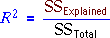
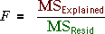

Different interpretations of R2 and the F ratio
It is important to distinguish between the interpretations of the coefficient of determination and the F ratio.
| Used for... | Problem | |
|---|---|---|
|  | Summarises the usefulness of the model. Describes the proportion of overall variability that is explained by the model. | Does not however indicate whether this is statistically significant or could be simply random variation. |
|  | Describes the strength of the evidence that the model is needed — i.e. the evidence that a simple model without explanatory variables is inadequate. | Does not indicate how much of the response variability is explained by the model — its value is only useful as an intermediate step for calculating the p-value for the test. |
Warning when sample sizes are high
For data sets with hundreds of observations, it is often found that the F-ratio is large, letting us conclude that at least one explanatory variable must be related to the response.
However it is possible that R2 could still be low — even 10% or less. This is not inconsistent. Such results would arise from a very weak relationship (indicated by the low R2) but a large enough sample size that we are certain that there is some relationship, however weak.
Student performance in a Business Statistics course
The data set below arose
In this example, there is extremely strong evidence that test marks are related to assignment marks in the Business Statistics data set (F = 20.237 and p-value effectively zero).
However the relationship is not strong (R2 = 0.117). In large data sets, even weak relationships can be significant.